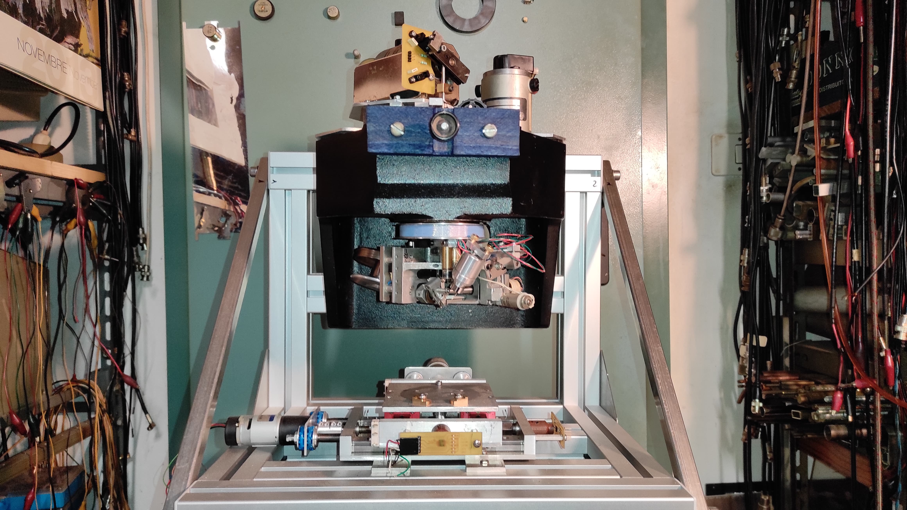
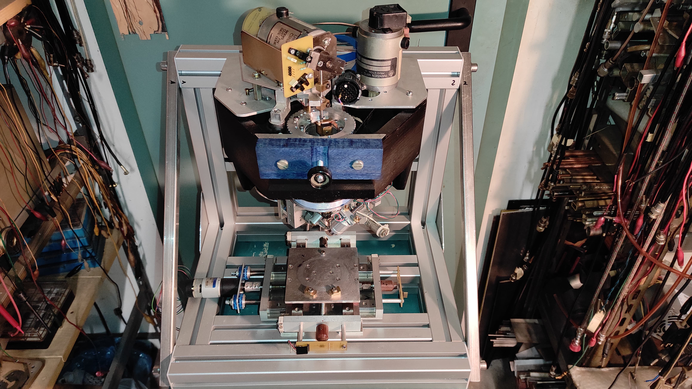

Closing remarks
Results and future work
In this website we've gone through the development of various parts of the bonding machine.
- We started by defining the general master-slave architecture of the machine and we wrote a custom communication protocol suited for our needs (see here);
- We designed and built the ultrasonic driver PCB to drive the ultrasonic welding element (see here);
- We implemented a nested PI controller with trajectory profiling for the 4 motors, achieving reliable and smooth motion. We also designed and built custom PCBs for the controllers (see here);
- We implemented another PI controller to control the heating stage (see here);
- We built a custom microscope with a CMOS camera to be able to accurately position the machine head on the substrate (see here);
- We built a modular power supply (24V, 12V, 5V, 3.3V) by cascading multiple buck converters (see here)
- By manually assisting the machine, we were able to perform a first bond test (see here);
- We almost fully automatized the bonding procedure (head descent and raise, ultrasonic driver activation, solenoid actuation) and successfully managed to bond a test substrate (see here);
- We want to display the camera output onto a LCD screen, and we also want to be able to control the machine through a touchscreen. We're currently stuck in this regard as we haven't been able to reliably connect the external RAM to the MCU due to crosstalk and other parasitic effects caused by long interconnections (see here);
- We haven't yet designed a custom PCB for the MCU as its features are not yet finalized. Unforeseen changes requiring PCB redesign might appear during development, and we can't afford to make many test PCBs. We need to nail it on the first try (see here);
- We want to develop an automatic bonding mode: the user will select the start and end points and then press a button to initiate the bonding procedure. The machine will automatically position itself above the first point, perform the first bond, move to the second point, perform the second bond and break the wire;
- We want the machine to self recognize the soldering pads to further aid the user, improving precision.
Before and after
We now report a small before/after image gallery so you can compare the state of the project before and after the making of this lab activity.
Before
- Top-left: before, front view of the machine;
- Top-right: before, top view of the machine;


After
- Top-left: after, front view;
- Top-right: after, back view;
- Middle-left: after, side view;
- Middle-right: after, side view;
- Bottom: after, front view with the camera stream viewed on the PC.